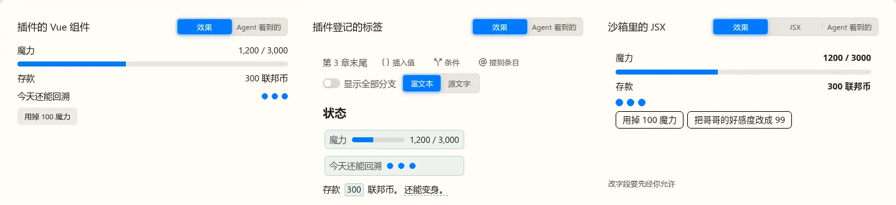
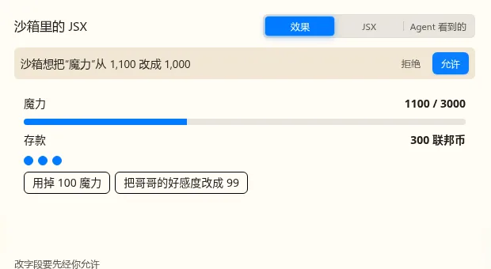

第 3 轮：状态栏这类界面走哪条路
状态栏、角色卡这类界面，走插件登记的标签、沙箱里的 JSX，还是两条都要？
推荐两条都要、分先后：登记的标签放进本 Work（作者能摆、模型读得到值）；沙箱 JSX 留给 roleplay 与生成式界面，另开 Work。

| 插件的 Vue 组件 | 插件登记的标签 | 沙箱里的 JSX | |
|---|---|---|---|
| 谁写 | 插件作者 | 插件作者写标签，作者在主文字里摆 | 作者、别人分享的模板、LLM |
| 可不可信 | 可信，跑在应用里 | 可信，跑在应用里 | 不可信，跑在隔离的框里 |
| 作者能改样子 | 不能 | 能摆位置、改属性 | 能改代码 |
| 改字段 | 直接改 | 经标签（就地改还没做） | 经消息；第一次要作者允许；只能改这个条目 |
| 模型看到 | 插件给的文字 | 带值的标签 | 看不到里面 |
| 要做的东西 | 已有 | 标签登记表 | JSX 编译、运行时、沙箱接口、写入的授权 |
只做登记的标签
<StatBar of="panel.魔力" max="panel.魔力上限" label="魔力">1000/3000</StatBar> <Pips of="panel.回溯" count="3" label="今天还能回溯">3</Pips>
上面是模型读到的样子。样子只能是插件给的几种。
只做沙箱 JSX

样子随便写；模型读到的只有 <jsx>，看不到值。
两条都要，标签先做
const [fields, setFields] = useState(nbook.fields());
useEffect(() => nbook.subscribe(setFields), []);
…
<button onClick={spend}>用掉 100 魔力</button>
常见的状态用登记的标签；要特别样子、要交互的，用沙箱。
已定
- Agent 读主文字时带值、只给看（第 2 轮）
- 计算值
<V expr>：四则运算与取整、最大最小、绝对值、百分比（第 2 轮之后） - 条件写成
test表达式；给 Agent 的值写在标签中间、用 JSON（第 1 轮） - 取值与条件换成标签；解析器只留 marked；富文本为主、保留源文字（11-23、11-26）